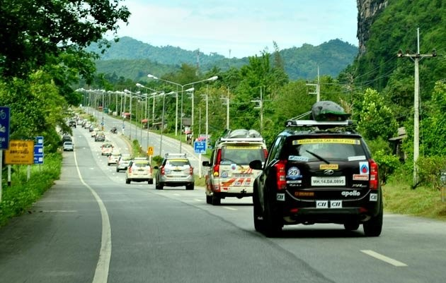

การเดินทางโดยรถยนต์ส่วนตัว

สามารถเดินทางได้จากกรุงเทพฯ สามารถใช้เส้นทางได้ 3 สาย คือ
บางนา-ตราด (เส้นทางหลวงหมายเลข 3) ผ่านชลบุรี-ระยอง-จันทบุรี-ตราด ระยะทางประมาณ 385 กิโลเมตร
บางนา-ชลบุรี-แกลง-จันทบุรี-ตราด (เส้นทางหลวงหมายเลข 344) ระยะทางประมาณ 318 กิโลเมตร
ทางหลวงพิเศษ (motor way) เริ่ม กิโลเมตรที่ 0 ที่แยกถนนศรีนครินทร์ตัดถนนรามคำแหง และมาออกที่เส้นทางบ้านบึง-แกลง-จันทบุรี- ตราด
"
close